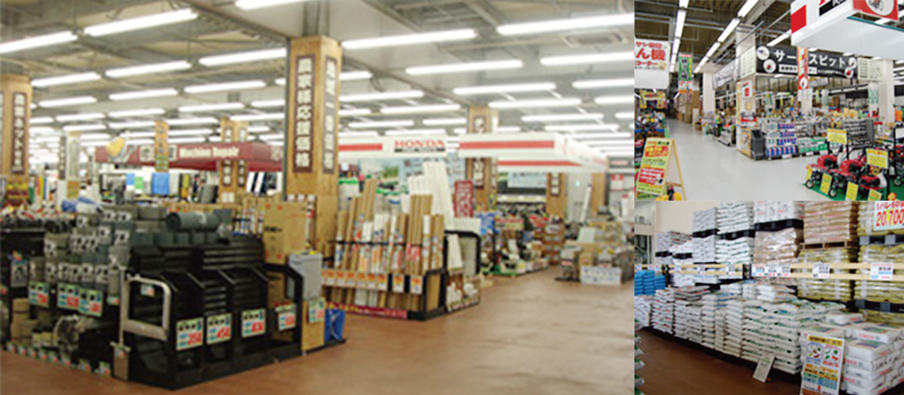

農業資材

家庭菜園から農家の皆様方にもご満足いただける品揃えでお待ちしています。
農業や家庭菜園に必要な資材を豊富に取り揃えております。 肥料、農薬などから耕運機や草刈機まで、農業に関わるお客様の要望に応えられるよう豊富な在庫と品揃えでお待ちしています。 まずはムサシ農業資材コーナーへ!!ここに来れば揃います。
取扱商品例
肥料、農薬、水稲・畑作資材、ハウス部材、防鳥・防風・遮光用品、収穫用品、耕運機、噴霧器、草刈機、チェーンソー、除雪機

農業や家庭菜園に必要な資材を豊富に取り揃えております。 肥料、農薬などから耕運機や草刈機まで、農業に関わるお客様の要望に応えられるよう豊富な在庫と品揃えでお待ちしています。 まずはムサシ農業資材コーナーへ!!ここに来れば揃います。
肥料、農薬、水稲・畑作資材、ハウス部材、防鳥・防風・遮光用品、収穫用品、耕運機、噴霧器、草刈機、チェーンソー、除雪機